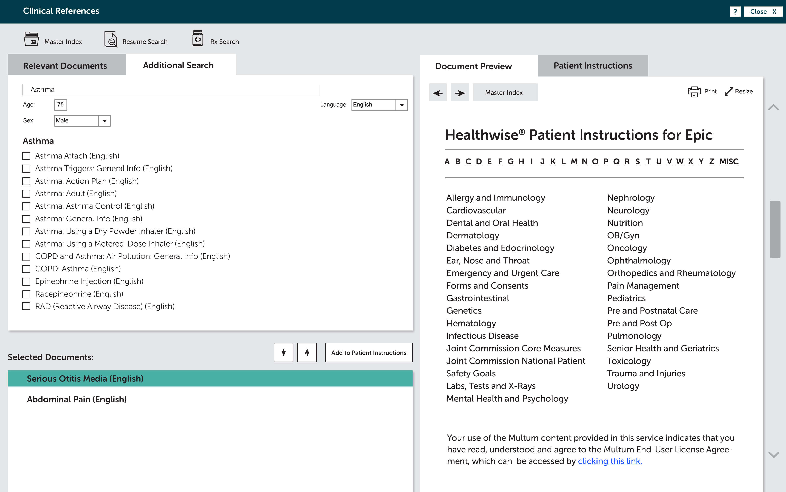
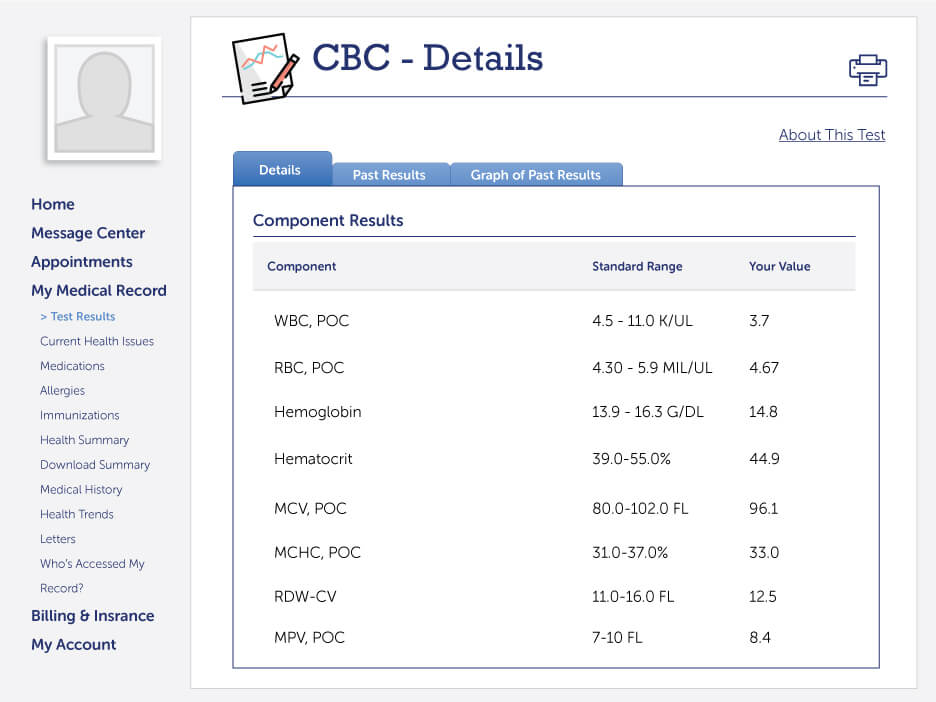

Before we get started, which experience would you like to preview?
Use Healthwise patient education directly within EpicCare. Access education through the Discharge Navigator from the Inpatient/Emergency Department application.
Suggested health education resources are tailored according to the patient’s current problem. Preview patient education prior to sending. Edit the information to include special instructions or notes for the patient.
Click on “Go to References/Attachments” to search for more patient education.
The Clinical References window appears, listing relevant documents based on the patient’s problem list
More resources can be located through the “Additional Search” tab.
Preview the education in the Document Preview window.
Select the best language for the patient from 15 available languages.
Selected resources, listed under ‘References/Attachments,’ are added to the After Visit Summary (AVS), which can be printed and shared through MyChart.
You can also access Healthwise education through the Ambulatory application. Start by clicking on the patient’s problem.
The Clinical References window brings up a list of patient-specific education, relevant to the selected problem.
Click “Add to Patient Instructions” to print the materials for the patient, add them to the AVS, or send them to MyChart or MyChart Bedside.
Find additional education by doing your own SmartText search on the “Additional Search” tab.
Or browse through a list of medical topics.
Education sent to the patient is captured in the patient record. In addition, when using Healthwise interactive decision aids, patient responses are captured and added to their record using HL7 interfaces. Click on the “Chart Review” tab.
View the status of the patient’s progress with the decision aid.
Click to see detailed patient response.
The Patient Response Report captures what the patient entered about their preferences and understanding of available treatment options.


Healthwise® Solutions for Epic: Care Team Experience
To access patient education associated with the care plan, choose “Patient Education”.
On the “Unresolved Education” tab, click on a teaching point to see related education.
Resources that support the teaching point appear in the Education Materials window. The care team can print them for the patient or assign them through MyChart Bedside.
Preview the education prior to sending or print for the patient during the visit.
Healthwise® Solutions for Epic: Care Plan Experience
In MyChart, patients can find out more information about their health and access tailored health education resources.
Info button integration gives patients the power to learn more about their health. This example shows results from a Complete Blood Count. Patients can click on “About This Test” to better understand what their numbers mean.
The patient can review easy-to-understand, medically accurate information about a Complete Blood Count, why it’s done, and what the results mean.
Patients can click on any term they don’t understand for more information.
Terms are defined and supported with rich media galleries for comprehension. Medical terms are explained in plain language and illustrated with clear images.
In MyChart Bedside, Infobutton integration allows patients to learn more about their health. Patients can tap the information icon next to what they want to learn more about.
Patients are connected to more information about their conditions and medications.
Patients can also view education assigned by their care team by tapping “To Learn” in the navigation. This displays a resource library of topics for patients to review.
Topics bring up relevant education and videos.



Healthwise® Solutions for Epic: Patient Experience